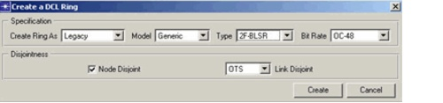
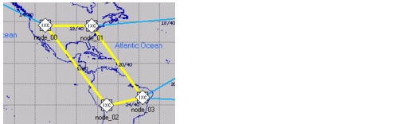

Ring Design > Creating Rings
Creating Rings
Procedure 12-1 describes how to create SONET rings manually. (You can also create rings by importing data from a data file; for more information, see SONET/SDH Ring Data Files.)
Procedure 12-1 Creating a SONET Ring
- Open the Ring Browser (Network > Ring Browser) and click Create.
The Create a DCL Ring dialog box appears.
- Define the properties of the ring. You can specify the ring cost model, usage type, technology type, and bit rate. You must also specify the disjointness properties of the ring. This is especially important if the ring path includes non-adjacent EOCC nodes (that is, nodes that are not connected directly with a physical link). In this case, the logical DCL ring topology can differ from the physical ring topology.
Figure 12-4 Create a DCL Ring Dialog Box

- In the Project Editor, left-click on each component DCL node to include it in the ring path. You can include ECC and EOCC nodes. Note the following:
- If a ring link connects ECC-ECC or ECC-EOCC nodes, it must be supported by a physical DCL link (that is, a direct fiber pair between both nodes).
- If a ring link connects EOCC-EOCC nodes, it can be supported by a logical link (that is, an OCH connection). Therefore, you can include EOCC nodes in the ring without a direct fiber pair between them, as long as the network can find an OCH path between the nodes.
After you include all nodes in the ring, click Create in the Create a DCL Ring dialog box to create the ring.
Figure 12-5 Creating a Ring

If you created the ring successfully, SP Guru Transport Planner adds the DCL links to support the rings. Note that the capacity indicated on the ring links is the usable capacity. A USPR at an OC-48 rate has a usable capacity of 48 STS-1 time slots per link. A 2F-BLSR at an OC-48 rate has a usable capacity of 24 time slots, because half of the capacity is reserved for protection. However, a 4F-BLSR OC-48 has a usable capacity of 48 time slots since the protection capacity is provided on two protection fibers.
End of Procedure 12-1
| Home © 1987-2007 OPNET Technologies, Inc. All Rights Reserved. This software may be covered by one or more U.S. Patents. See complete patent notice in the Legal Notices section. OPNET Support Center |